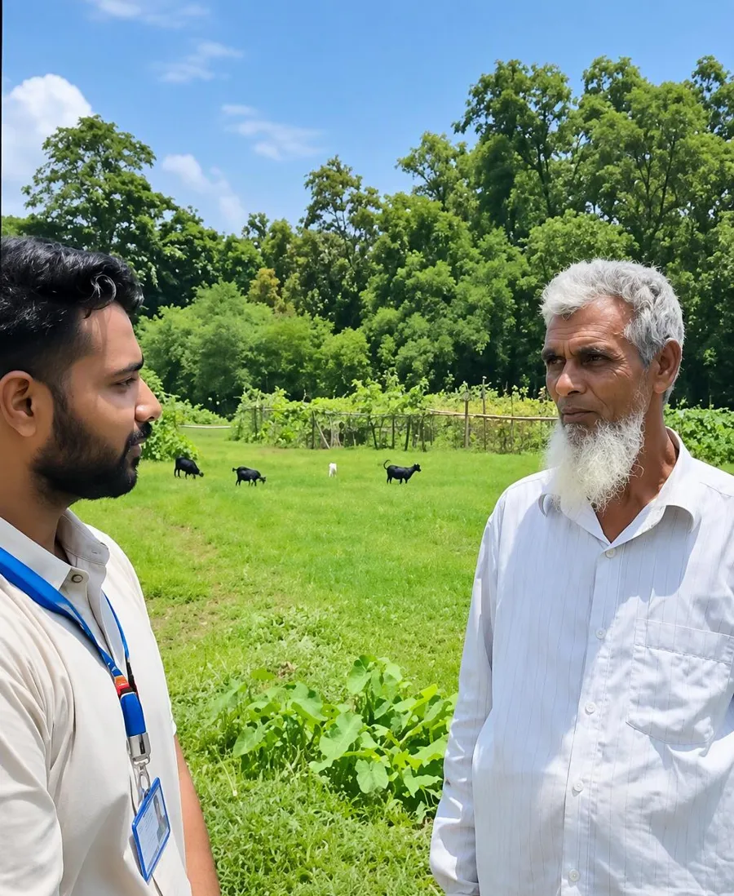

Exploring the Barriers to AI-Based Agricultural Chatbot Adoption Among Farmers: A Qualitative Study in Rural Bangladesh
This study examines the barriers that may affect farmers’ adoption of AI-based agricultural chatbots in rural Bangladesh, asking why farmers do not use chatbots. Primary data was collected in a village in Gazipur.
Photo: collecting primary data in Gazipur.
Read the research paper